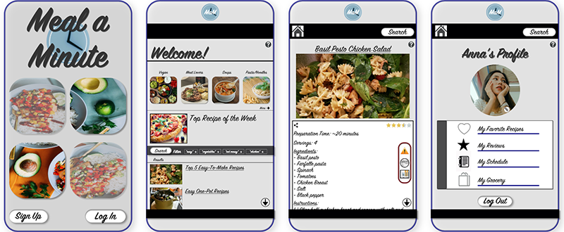
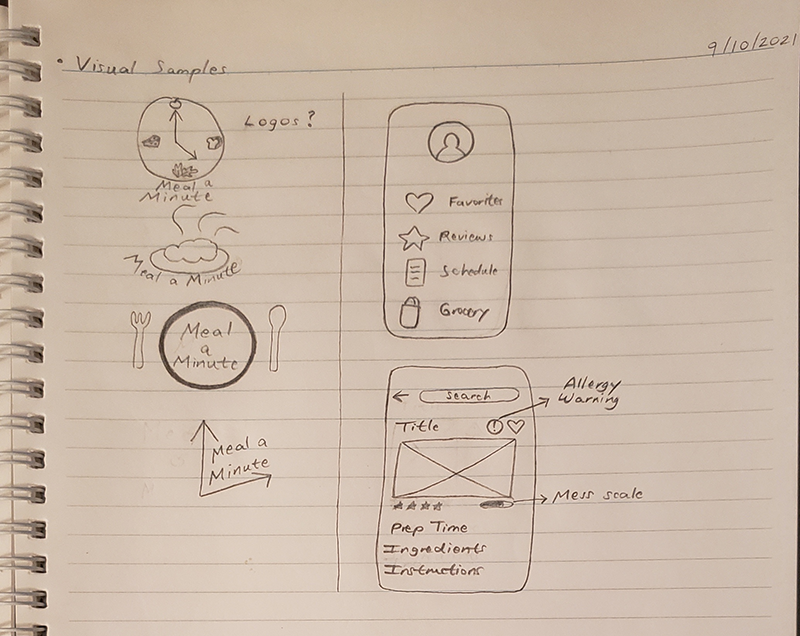
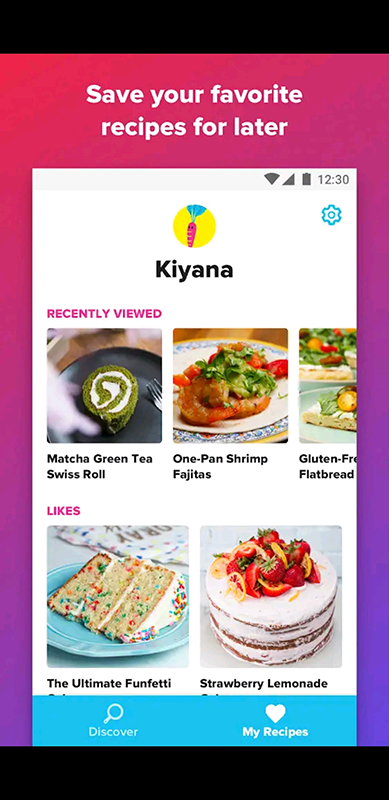
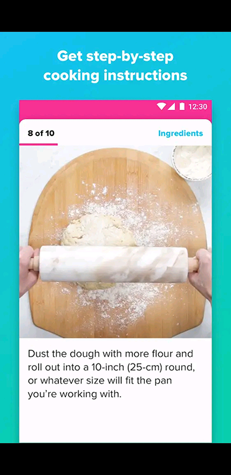
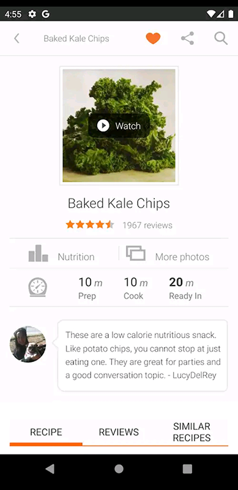
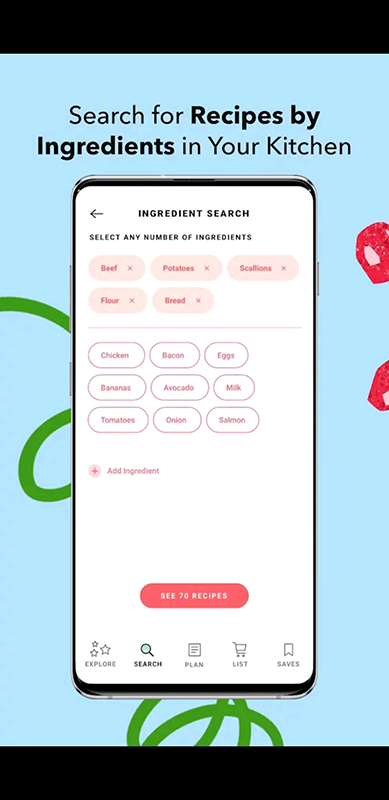
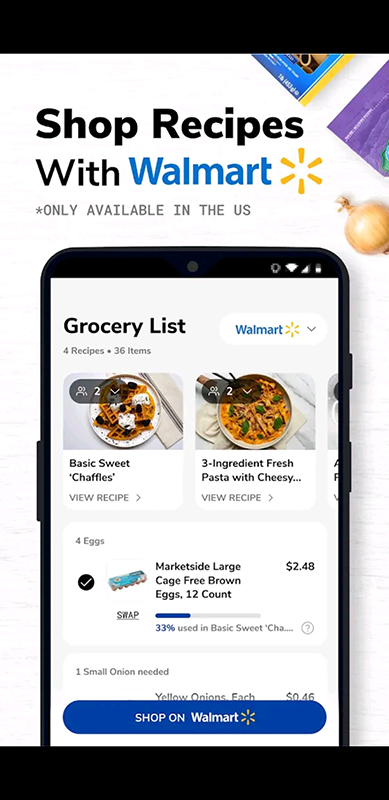
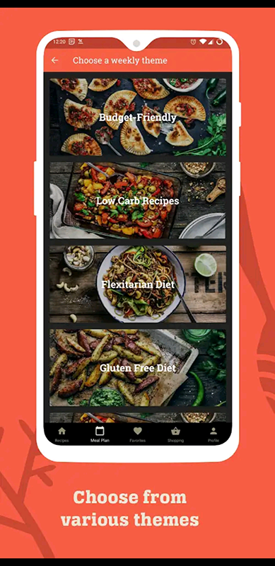

Independent Project Proposal
by Carla Llana
Project Name: Meal a Minute
Overview:
I will redesign a cooking app I created in SMAD 203. My idea centers around improving the experience for college students trying to prepare their own meals. This idea came about from my own experience when I transitioned into JMU. I wanted to cut back on expenses, especially when it came to cooking, but I also found that I sometimes didn’t have the time to cook. I wondered if other college students felt the same, so I conducted a survey and obtained insightful observations from it. Also, some college students don’t have much experience with cooking, so I figured that I could create an app in which college students can find an affordable, quick meal to prepare.
Goals:
- Design a clean, less cluttered layout
- Use a different, brighter color theme
- Be more creative with the logo
- Show what recipes are the quickest to prepare
- Have recipes sorted by health preferences also; it can list the number of calories for each recipe as well as show a warning for allergic reactions they may induce
- Include a “mess scale”
- Instead of a list of instructions, users can choose to view them as pictures or videos
- Include a feature that can show what to cook based on the ingredients at home
- Include a feature that determines where to find the nearest grocery store for items they need or what grocery stores offer curbside pickup
- Have a feature for ingredient substitutes
- Include a profile page for users where they can view their favorite meals
- Include Favorite, Add Review, Cooking Schedule, and Grocery List features
Audience:
College students
My target audience is college students who want to prepare their own meals but find that they don’t have the time to do so. Some college students may also want to cut back on expenses and cook their own meals, having a healthier, self-manageable option. Some meals are also difficult or messy to prepare, and college students with little to no experience with cooking can learn or add to their cooking skills.
Timeline:
- 9/10 – Independent Project Proposal
- 9/17 – Rough Design Concepts
- 9/24 – Final Design
- 10/1 – Low-Fidelity Prototype
- 10/8 – High-Fidelity Prototype
- 10/15 – Finalize High-Fidelity Prototype
- 10/22 – Finalize Presentation
- 10/29 – Independent Project
Visual Samples:
Previous Design

Sketches

Other App Designs


